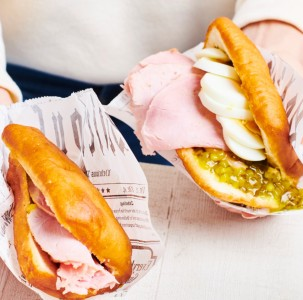
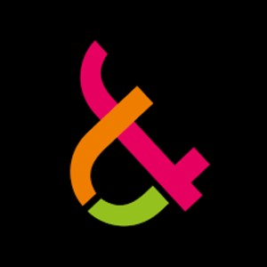

Vedyt ja atomit
SaiPa

Lut university
1800-luvulla ymmärrettiin Saimaan merkitys teollisuudessa ja Lappeenrantaan perustettiin metsäteollisuusyhtiö, Kaukaan Tehdas Oy. Alun perin tehdas tuotti paperia ja sulfiittiselluloossaa teollisuuden tarpeisiin, mutta tuotannon ajautuessa kriisiin taloudellisten vaikeuksien takia 1900-luvun alkupuolella, se fuusioitui lappeenrantalaisen makeisia valmistaneen Chymoksen kanssa ja aloitti viinan tuotannon nykyisen Kaukaan tehtaan paikalla. Chymoksen tehdas ja toimitilat myytiin alankomaalaiselle Leafille. Uuden alkoholia valmistavan yhtiön nimeksi tuli Oy Kaukas Ab, joka toimii edelleen. Yhtiön erikoisuutena on vanerista valmistetut alkoholipakkaukset ja suosituin tuote on sahatukkiin piiloitettu väkevää viinaa sisältävä alkoholipullo, "Salakuljettajan Erikoinen". Pitkän historian omaavan viinatehtaan vuoksi alkoholisoituneita henkilöitä on ruvettu kutsumaan nykykielessä "Lappeen rantojen miehiksi" (tasa-arvon vuoksi mainittakoon myös Lappeen rantojen naiset).
Vedyt ja atomit
SaiPa
Lut university